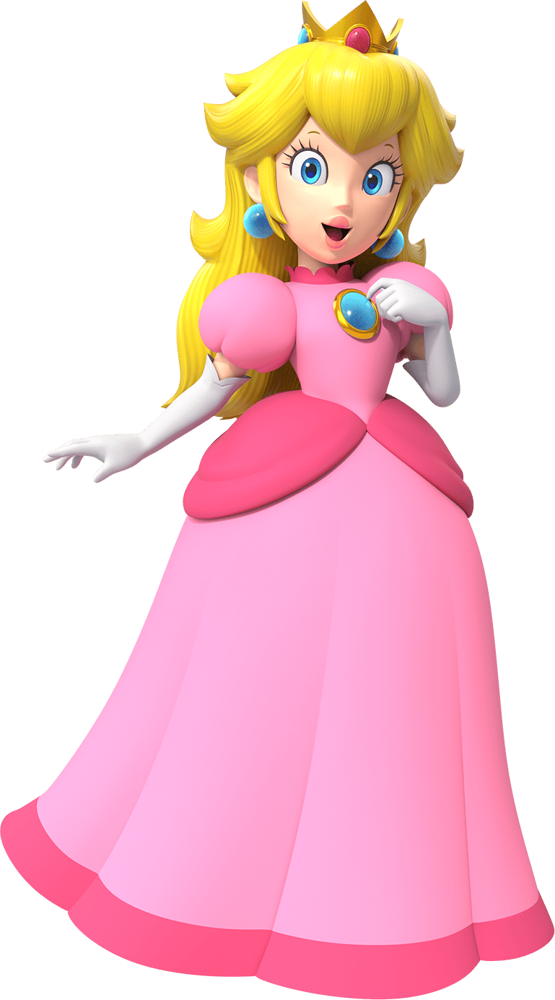

Princess Peach

- Princesa Peach é a governante do Reino dos Cogumelos
- Também é o interesse amoroso do Mario e a melhor amiga da princesa Daisy, governante de Sarasalândia
- Na maioria dos jogos, Peach é sequestrada por Bowser, que deseja torná-la sua rainha
- Embora tenha sido forçada a se casar com Bowser em alguns jogos, como Super Paper Mario e Super Mario Odyssey, Peach normalmente é salva por Mario e, ocasionalmente, por Luigi
- Como princesa, Peach é doce, gentil, otimista, amigável e experiente.
- Possui os poderes de desfazer feitiços e de fazer aparecer corações rosas e armas especiais, como seu Guarda-sol, o qual ela utiliza para planar e se proteger do sol.
- Além de acompanhar Mario nas aventuras dele, também possui suas próprias aventuras
- Super Princess Peach: Nessa aventura, Bowser captura Mario, Luigi e os Toads do Reino dos Cogumelos por vingança e Peach consegue ter a coragem de resgatá-los.
Antes de partir para o resgate, Toadsworth, um grande amigo seu, dá para ela um guarda-chuva falante incomum chamado Perry para acompanhá-la durante sua missão.
- Princess Peach: Showtime!: Nesa aventura, um dos seus súditos Toad recebe um panfleto anunciando um espetáculo no Teatro Brilhante, então eles decidem ir assistir junto com outros Toads.
Porém, quando já conseguem seus ingressos, a malvada Uva e a Turma Azeda invadem e tomam o teatro, causam uma rajada de vento, levando embora a Coroa da Peach, sua mala,os Toads e outros convidados do teatro. Então, Peach se une à guardiã do teatro, Stella, para derrotar os invasores.
- Super Mario 3D World: Nessa aventura, Peach se diverte com Mario, Luigi e o Toad azul vendo os fogos de artifício no Reino dos Cogumelos ao entardecer quando encontram um cano transparente inclinado. Depois, Mario e Luigi conseguem consertar o cano e em seguida, surge de dentro do cano
uma princesa Sprixie verde, que revela que Bowser sequestrou as outras 7 princesas Sprixie e que conseguiu escapar dele. Porém, Bowser aparece dentro do cano, consegue sequestrar a princesa verde e consegue fugir. Em seguida, Peach cai no cano atrás dele, mas seus companheiros a alcançaram, caíram em área
e encontram a princesa verde presa dentro de um pote. Quando conseguem resgatá-la, a princesa verde constrói um cano que vai direto para outro mundo e de lá para outros mundos onde estarão as outras princesas. Então, Peach, Mario, Luigi e o Toad azul precisam passar por vários obstáculos para resgatar as 7 princesas Sprixies e derrotar o Bowser de uma vez.